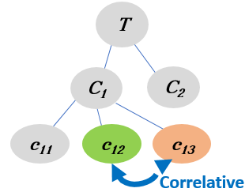

Health-related Quality of Life Needs of Patients with Long-term Respiratory Illnesses
This is a collection of video segments from YouTube videos with patient stories.
They have been automatically segmented, characterised and linked to domain concepts.
The videos in this page have been linked via "Correlative Linking" which means:
To become aware of a specific concept (Green oval) from a topic T, you will explore videos about a similar concept (Orange oval).

Become aware of the concepts similar to CHRISTIAN from topic PERSONAL VALUES AND BELIEFS.
Each segment will start from a time point in the video and will stop when the corresponding concepts are covered.
You can re-watch the segment or watch other parts of the video, if you wish so.
The next video segment mentions TEMPLE ( related to PERSONAL VALUES AND BELIEFS). The segment is taken from a YouTube video with ID= mWo-G3UQ-zU , and starts at 0.0 with a duration of 136 seconds.
The next video segment mentions CHRISTIAN ( related to PERSONAL VALUES AND BELIEFS). The segment is taken from a YouTube video with ID= e0KVtXL-TjY , and starts at 0.09 with a duration of 41 seconds.
You watched a video segment about (TEMPLE) which is similar to (CHRISTIAN) related to PERSONAL VALUES AND BELIEFS.
The segments were automatically extracted from popular YouTube videos related to the Health-related Quality of Life Needs of Patients with Long-term Respiratory Illnesses, using algorithms for segmentation, characterisation and linking based on a theory for concept learning.
We hope you found the collection of video segments helpful.